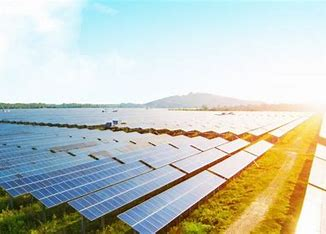

Fazenda solar nada menos é uma fazenda infertil com um monte de rooftops instalados para a captação de energia para a distruibuição da mesma. Por que eles fizeram isso? Eles fizeram isso para atender a pequenas e médias empresas (“PMEs”) e residências, se foi visto como uma tentativa de lucro e deu super certo pois a mesma foi pioneira em Energia Renovaveis. Tendo como a MUV e a MITSUI como socios e seu CEO Surya Mendonça.
|  | |
|---|---|
| Página Inicial | Saiba Mais |